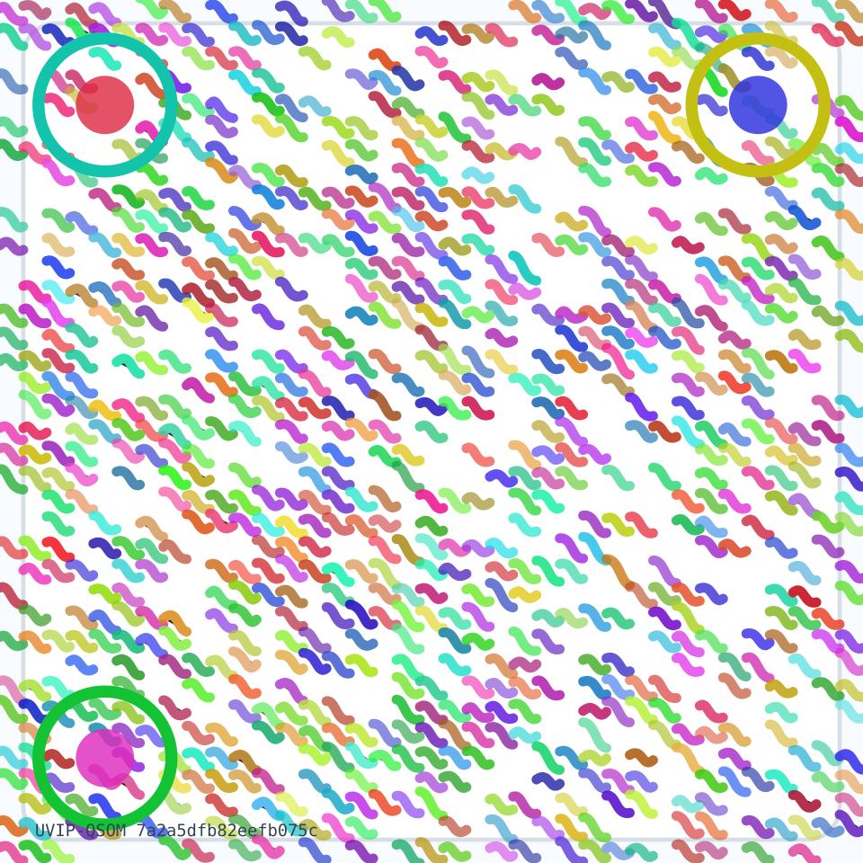

UVIP QSO Mesh Barcode
A deterministic colorful data carrier for the public lookup, UVIP attestation summary, QSOF projection identity, and evidence boundary. Use the standard URL fallback for reliable access.

Payload hash:7a2a5dfb82eefb075cb22fcbe0372b0b3dbb3ad8bbdfbc1ff59d21fa8ae99fcd
Mesh URI:qso://housing-fraud-intel.uvip_qsom.mesh.3e5019bdda0006335e46e6f6
Boundary: Decorative mesh is an auditable data carrier and visual signature. It is not a legal conclusion, title opinion, ownership determination, valuation, or misconduct finding. Standard QR/URL fallbacks control access.
Embedded Payload
{
"attestations": {
"files": {
"identity": {
"available": true,
"path": "/Users/ALISTAIRE/housing-fraud-intel-api/exports/bridge_status/bridge_identity_latest.json",
"sha256": "6551d44543b9cb06b992ae737bfab86bfdb354bae3c65744fb368462a179e03d",
"size_bytes": 4118
},
"mcp_context": {
"available": true,
"path": "/Users/ALISTAIRE/housing-fraud-intel-api/exports/bridge_status/mcp_bridge_context.json",
"sha256": "825da748b1f99530731124dd9ed9393d0ab99143f7efd6a8c2d17c46a814079c",
"size_bytes": 3067
},
"public_qr_target": {
"available": true,
"path": "/Users/ALISTAIRE/housing-fraud-intel-api/outputs/public_property_lookup/property_lookup_qr_target.txt",
"sha256": "595de95eabd3228d2a6880bdd4b4c6445e47d0f2a854e81b5ce15ed2c0ff44b0",
"size_bytes": 68
},
"qsof_manifest": {
"available": true,
"path": "/Users/ALISTAIRE/housing-fraud-intel-api/exports/qsof_bridge/qsof_bridge_manifest.json",
"sha256": "f7524217442b7e70581a4662ff42ed6812151eed99ff11b8e457eccd74c04cc0",
"size_bytes": 658
}
},
"mcp_context": {
"context_hash": "a483c869c46c6383872dced134317ddb25e64d3a09ef9ba66cf204700a731cb6",
"generated_at": "2026-05-29T06:24:31.894612+00:00",
"protocol": "mcp_bridge_context.v1"
},
"qsof_bridge": {
"generated_at": "2026-05-29T06:24:24.519975+00:00",
"manifest_hash": "d54bd2faf0137bfedeee4b782b8e0d71d99a67f46b239e74b010b6c994fc1700",
"object_count": 22
},
"uvip": {
"attestation_hash": "7c25de9e9d3f5a998422f9b50cd1215e53bfdc2f7913dfa506df89cc82fef0f6",
"previous_attestation_hash": "bc47edd4b8ab95cd8089a54e9c4fafd02b9d213fcab8416d8c4d4b3439d88c05",
"protocol": "UVIP-Bridge",
"protocol_version": "1.0.0",
"run_id": "e4de74c1ede33fef14747a39",
"verification_summary": {
"attested_artifact_count": 7,
"bridge_source_reachable": true,
"hash_chain_present": true,
"identity_level": "hashed_runner_identity_plus_github_blob_identity",
"missing_artifact_count": 0
}
}
},
"encoded_payload_b64url": "eyJhdHRlc3RhdGlvbnMiOnsiZmlsZXMiOnsiaWRlbnRpdHkiOnsiYXZhaWxhYmxlIjp0cnVlLCJwYXRoIjoiL1VzZXJzL0FMSVNUQUlSRS9ob3VzaW5nLWZyYXVkLWludGVsLWFwaS9leHBvcnRzL2JyaWRnZV9zdGF0dXMvYnJpZGdlX2lkZW50aXR5X2xhdGVzdC5qc29uIiwic2hhMjU2IjoiNjU1MWQ0NDU0M2I5Y2IwNmI5OTJhZTczN2JmYWI4NmJmZGIzNTRiYWUzYzY1NzQ0ZmIzNjg0NjJhMTc5ZTAzZCIsInNpemVfYnl0ZXMiOjQxMTh9LCJtY3BfY29udGV4dCI6eyJhdmFpbGFibGUiOnRydWUsInBhdGgiOiIvVXNlcnMvQUxJU1RBSVJFL2hvdXNpbmctZnJhdWQtaW50ZWwtYXBpL2V4cG9ydHMvYnJpZGdlX3N0YXR1cy9tY3BfYnJpZGdlX2NvbnRleHQuanNvbiIsInNoYTI1NiI6IjgyNWRhNzQ4YjFmOTk1MzA3MzExMjRkZDllZDkzOTNkMGFiOTkxNDNmN2VmZDZhOGMyZDE3YzQ2YTgxNDA3OWMiLCJzaXplX2J5dGVzIjozMDY3fSwicHVibGljX3FyX3RhcmdldCI6eyJhdmFpbGFibGUiOnRydWUsInBhdGgiOiIvVXNlcnMvQUxJU1RBSVJFL2hvdXNpbmctZnJhdWQtaW50ZWwtYXBpL291dHB1dHMvcHVibGljX3Byb3BlcnR5X2xvb2t1cC9wcm9wZXJ0eV9sb29rdXBfcXJfdGFyZ2V0LnR4dCIsInNoYTI1NiI6IjU5NWRlOTVlYWJkMzIyOGQyYTY4ODBiZGQ0YjRjNjQ0NWU0N2QwZjJhODU0ZTgxYjVjZTE1ZWQyYzBmZjQ0YjAiLCJzaXplX2J5dGVzIjo2OH0sInFzb2ZfbWFuaWZlc3QiOnsiYXZhaWxhYmxlIjp0cnVlLCJwYXRoIjoiL1VzZXJzL0FMSVNUQUlSRS9ob3VzaW5nLWZyYXVkLWludGVsLWFwaS9leHBvcnRzL3Fzb2ZfYnJpZGdlL3Fzb2ZfYnJpZGdlX21hbmlmZXN0Lmpzb24iLCJzaGEyNTYiOiJmNzUyNDIxNzQ0MmI3ZTcwNTgxYTQ2NjJmZjQyZWQ2ODEyMTUxZWVkOTlmZjExYjhlNDU3ZWNjZDc0YzA0Y2MwIiwic2l6ZV9ieXRlcyI6NjU4fX0sIm1jcF9jb250ZXh0Ijp7ImNvbnRleHRfaGFzaCI6ImE0ODNjODY5YzQ2YzYzODM4NzJkY2VkMTM0MzE3ZGRiMjVlNjRkM2EwOWVmOWJhNjZjZjIwNDcwMGE3MzFjYjYiLCJnZW5lcmF0ZWRfYXQiOiIyMDI2LTA1LTI5VDA2OjI0OjMxLjg5NDYxMiswMDowMCIsInByb3RvY29sIjoibWNwX2JyaWRnZV9jb250ZXh0LnYxIn0sInFzb2ZfYnJpZGdlIjp7ImdlbmVyYXRlZF9hdCI6IjIwMjYtMDUtMjlUMDY6MjQ6MjQuNTE5OTc1KzAwOjAwIiwibWFuaWZlc3RfaGFzaCI6ImQ1NGJkMmZhZjAxMzdiZmVkZWVlNGI3ODJiOGUwZDcxZDk5YTY3ZjQ2YjIzOWU3NGIwMTBiNmM5OTRmYzE3MDAiLCJvYmplY3RfY291bnQiOjIyfSwidXZpcCI6eyJhdHRlc3RhdGlvbl9oYXNoIjoiN2MyNWRlOWU5ZDNmNWE5OTg0MjJmOWI1MGNkMTIxNWU1M2JmZGMyZjc5MTNkZmE1MDZkZjg5Y2M4MmZlZjBmNiIsInByZXZpb3VzX2F0dGVzdGF0aW9uX2hhc2giOiJiYzQ3ZWRkNGI4YWI5NWNkODA4OWE1NGU5YzRmYWZkMDJiOWQyMTNmY2FiODQxNmQ4YzRkNGIzNDM5ZDg4YzA1IiwicHJvdG9jb2wiOiJVVklQLUJyaWRnZSIsInByb3RvY29sX3ZlcnNpb24iOiIxLjAuMCIsInJ1bl9pZCI6ImU0ZGU3NGMxZWRlMzNmZWYxNDc0N2EzOSIsInZlcmlmaWNhdGlvbl9zdW1tYXJ5Ijp7ImF0dGVzdGVkX2FydGlmYWN0X2NvdW50Ijo3LCJicmlkZ2Vfc291cmNlX3JlYWNoYWJsZSI6dHJ1ZSwiaGFzaF9jaGFpbl9wcmVzZW50Ijp0cnVlLCJpZGVudGl0eV9sZXZlbCI6Imhhc2hlZF9ydW5uZXJfaWRlbnRpdHlfcGx1c19naXRodWJfYmxvYl9pZGVudGl0eSIsIm1pc3NpbmdfYXJ0aWZhY3RfY291bnQiOjB9fX0sImV2aWRlbmNlX2JvdW5kYXJ5IjoiRGVjb3JhdGl2ZSBtZXNoIGlzIGFuIGF1ZGl0YWJsZSBkYXRhIGNhcnJpZXIgYW5kIHZpc3VhbCBzaWduYXR1cmUuIEl0IGlzIG5vdCBhIGxlZ2FsIGNvbmNsdXNpb24sIHRpdGxlIG9waW5pb24sIG93bmVyc2hpcCBkZXRlcm1pbmF0aW9uLCB2YWx1YXRpb24sIG9yIG1pc2NvbmR1Y3QgZmluZGluZy4gU3RhbmRhcmQgUVIvVVJMIGZhbGxiYWNrcyBjb250cm9sIGFjY2Vzcy4iLCJmYWxsYmFja3MiOlt7ImtpbmQiOiJjYW5vbmljYWxfbG9va3VwX3VybCIsInVybCI6Imh0dHBzOi8vYWV2ZXNwZXJzMi5naXRodWIuaW8vQnJpZGdlL3Byb3BlcnR5LWxvb2t1cC9zdGFuZGFsb25lLmh0bWwifSx7ImtpbmQiOiJwdWJsaWNfbWVzaF9wYWdlIiwidXJsIjoiaHR0cHM6Ly9hZXZlc3BlcnMyLmdpdGh1Yi5pby9CcmlkZ2UvdXZpcC1xc29tLyJ9LHsia2luZCI6InN0YW5kYXJkX3FyX3RhcmdldF90ZXh0IiwicGF0aCI6Ii9Vc2Vycy9BTElTVEFJUkUvaG91c2luZy1mcmF1ZC1pbnRlbC1hcGkvb3V0cHV0cy9wdWJsaWNfcHJvcGVydHlfbG9va3VwL3Byb3BlcnR5X2xvb2t1cF9xcl90YXJnZXQudHh0In1dLCJnZW5lcmF0ZWRfYXQiOiIyMDI2LTA1LTI5VDA2OjI0OjM2Ljg2MTg5NyswMDowMCIsImh1bWFuX3N1bW1hcnkiOiJQdWJsaWMgcHJvcGVydHkgbG9va3VwLCBVVklQIGF0dGVzdGF0aW9uIHN1bW1hcnksIFFTT0YgcHJvamVjdGlvbiBpZGVudGl0eSwgYW5kIGV2aWRlbmNlLWJvdW5kYXJ5IG1ldGFkYXRhLiIsInByb3RvY29sIjoiVVZJUC1RU09NIiwicHJvdG9jb2xfdmVyc2lvbiI6IjEuMC4wIiwicHJvdmVuYW5jZSI6eyJhcnRpZmFjdF9ydWxlIjoiRG8gbm90IG1vZGlmeSBvdXRwdXRzL2dpc19tb2RlbCBvciBwdWJsaWMgZXZpZGVuY2UgR2lzdCBkaXJlY3RseS4iLCJwcm9kdWNlciI6InNjcmlwdHMvZXhwb3J0X3V2aXBfcXNvbV9tZXNoX3FyLnB5Iiwic291cmNlX3JlcG8iOiJob3VzaW5nLWZyYXVkLWludGVsLWFwaSJ9LCJwdWJsaWNfbG9va3VwX3VybCI6Imh0dHBzOi8vYWV2ZXNwZXJzMi5naXRodWIuaW8vQnJpZGdlL3Byb3BlcnR5LWxvb2t1cC9zdGFuZGFsb25lLmh0bWwiLCJxc29fbWVzaCI6eyJldmVudF91cmkiOiJxc286Ly9ob3VzaW5nLWZyYXVkLWludGVsLnV2aXBfcXNvbS5ldmVudC4zZTUwMTliZGRhMDAwNjMzNWU0NmU2ZjYiLCJtZXNoX3VyaSI6InFzbzovL2hvdXNpbmctZnJhdWQtaW50ZWwudXZpcF9xc29tLm1lc2guM2U1MDE5YmRkYTAwMDYzMzVlNDZlNmY2IiwicnVudGltZV9ib3VuZGFyeSI6IlByb2plY3Rpb24gYXJ0aWZhY3Qgb25seTsgZG9lcyBub3QgbXV0YXRlIHFzby1mYWJyaWMgb3IgYW55IFFTTyBldmVudCBzdG9yZS4iLCJzdGF0ZV9jaGFubmVscyI6WyJwdWJsaWNfbG9va3VwX2FjY2VzcyIsInV2aXBfaWRlbnRpdHlfYXR0ZXN0YXRpb24iLCJtY3BfYnJpZGdlX2NvbnRleHQiLCJxc29mX3Byb2plY3Rpb25fbWFuaWZlc3QiLCJldmlkZW5jZV9ib3VuZGFyeSJdLCJzdGF0ZV9vYmplY3RfdXJpIjoicXNvOi8vaG91c2luZy1mcmF1ZC1pbnRlbC51dmlwX3Fzb20uc3RhdGUuM2U1MDE5YmRkYTAwMDYzMzVlNDZlNmY2In0sInNjaGVtYSI6InV2aXBfcXNvbV9tZXNoX3BheWxvYWQudjEiLCJ2aXN1YWxfZW5jb2RpbmciOnsiY29sb3JfbW9kZWwiOiJzaGEyNTYtZGVyaXZlZCBodWUvc2F0dXJhdGlvbi9saWdodG5lc3MgcGVyIG1vZHVsZSIsImRldGVybWluaXN0aWNfZnJvbSI6InBheWxvYWRfaGFzaCIsImtpbmQiOiJ3YXZ5X2NvbG9yX2JhcmNvZGUiLCJtYWNoaW5lX3JlYWRpbmdfc3RhdHVzIjoibWV0YWRhdGEtYW5kLXNpZGVjYXItZGVjb2RhYmxlOyB2aXN1YWwgc2Nhbm5lciBub3QgaW1wbGVtZW50ZWQiLCJ3YXZlX21vZGVsIjoic2hhMjU2LWRlcml2ZWQgc2ludXNvaWRhbCBvZmZzZXRzIHBlciBtb2R1bGUgcm93In19",
"evidence_boundary": "Decorative mesh is an auditable data carrier and visual signature. It is not a legal conclusion, title opinion, ownership determination, valuation, or misconduct finding. Standard QR/URL fallbacks control access.",
"fallbacks": [
{
"kind": "canonical_lookup_url",
"url": "https://aevespers2.github.io/Bridge/property-lookup/standalone.html"
},
{
"kind": "public_mesh_page",
"url": "https://aevespers2.github.io/Bridge/uvip-qsom/"
},
{
"kind": "standard_qr_target_text",
"path": "/Users/ALISTAIRE/housing-fraud-intel-api/outputs/public_property_lookup/property_lookup_qr_target.txt"
}
],
"generated_at": "2026-05-29T06:24:36.861897+00:00",
"human_summary": "Public property lookup, UVIP attestation summary, QSOF projection identity, and evidence-boundary metadata.",
"payload_hash": "7a2a5dfb82eefb075cb22fcbe0372b0b3dbb3ad8bbdfbc1ff59d21fa8ae99fcd",
"protocol": "UVIP-QSOM",
"protocol_version": "1.0.0",
"provenance": {
"artifact_rule": "Do not modify outputs/gis_model or public evidence Gist directly.",
"producer": "scripts/export_uvip_qsom_mesh_qr.py",
"source_repo": "housing-fraud-intel-api"
},
"public_lookup_url": "https://aevespers2.github.io/Bridge/property-lookup/standalone.html",
"qso_mesh": {
"event_uri": "qso://housing-fraud-intel.uvip_qsom.event.3e5019bdda0006335e46e6f6",
"mesh_uri": "qso://housing-fraud-intel.uvip_qsom.mesh.3e5019bdda0006335e46e6f6",
"runtime_boundary": "Projection artifact only; does not mutate qso-fabric or any QSO event store.",
"state_channels": [
"public_lookup_access",
"uvip_identity_attestation",
"mcp_bridge_context",
"qsof_projection_manifest",
"evidence_boundary"
],
"state_object_uri": "qso://housing-fraud-intel.uvip_qsom.state.3e5019bdda0006335e46e6f6"
},
"schema": "uvip_qsom_mesh_payload.v1",
"visual_encoding": {
"color_model": "sha256-derived hue/saturation/lightness per module",
"deterministic_from": "payload_hash",
"kind": "wavy_color_barcode",
"machine_reading_status": "metadata-and-sidecar-decodable; visual scanner not implemented",
"wave_model": "sha256-derived sinusoidal offsets per module row"
}
}